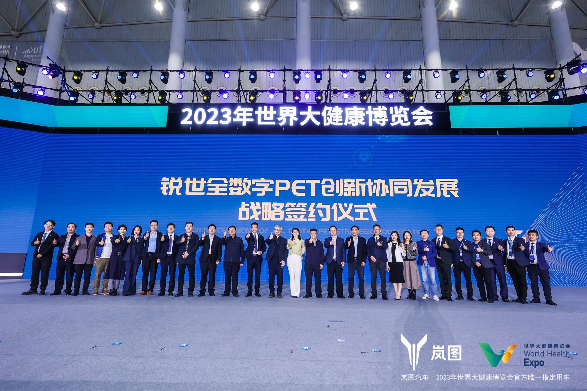
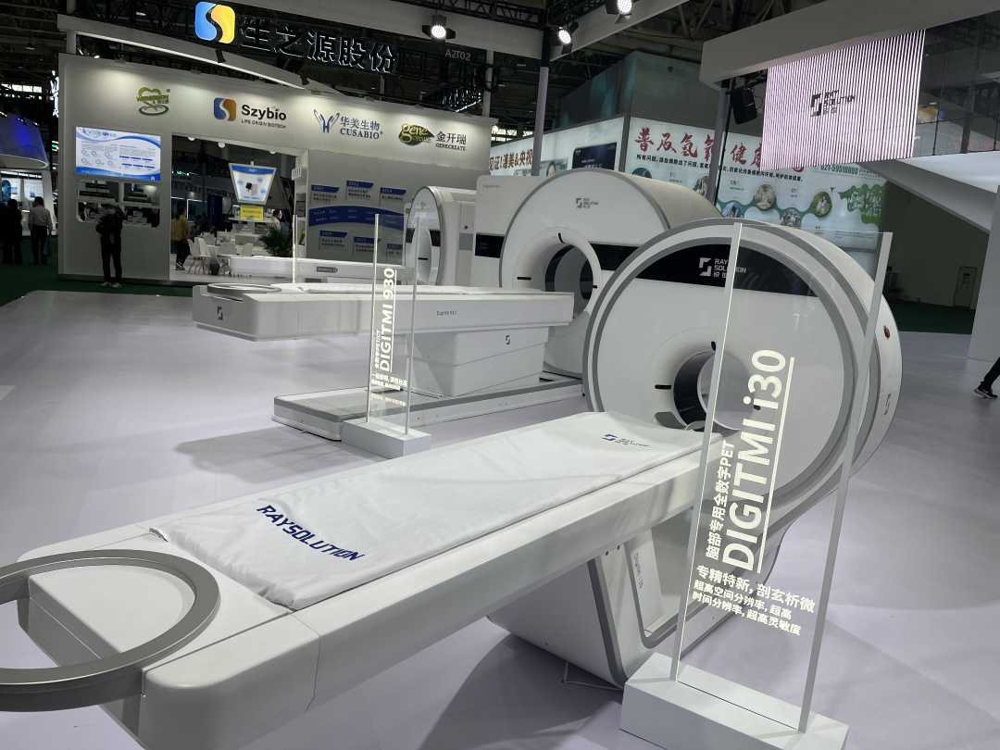

国产全数字PET产业化应用加速 京皖鲁等地多点开花
国产全数字PET产业化应用加速 京皖鲁等地多点开花
经济日报新闻客户端柳洁 通讯员 杨亚
2023-04-09 11:59
我国自主研发高端医疗器械数字PET迎来临床应用新进展。4月8日，数字PET产业化单位锐世医疗亮相2023年世界大健康博览会，同全国各地远道而来的嘉宾共同举行了“数字PET创新协同发展战略签约仪式”，并与安徽、山东、北京等地的医疗机构、科研院所达成临床应用、科研探索等全方位的合作。
在锐世医疗所在的500平米展馆中，由团队自主研发的新一代全数字PET/CT DigitMI 930亮相其中。去年12月，这台设备通过了中国医疗器械注册认证，正式获准进入市场。相关指标显示，DigitMI 930能在20秒内完成单个床位的扫描成像，全身扫描仅需80秒，单床位成像速度为当前全球第一。
数字PET团队产业化负责人、锐世医疗总经理张博介绍，诞生于湖北鄂州的全球首台临床全数字PET于2019年获准进入市场，完成了数字PET从0到1的研发与应用突破。从那之后，团队一直致力于实现数字PET大规模、高质量的应用，以驶入从1到N的发展“快车道”。
据了解，此次签约会上，团队与临沂市中医医院、北京大学医学部共同达成了全数字PET临床应用、研究和团队培养的合作协议，与中科离子医学技术装备有限公司达成了PET质子刀诊疗一体化设备开发等合作，与“世界长寿之乡”山东费县人民医院达成了全数字PET县域应用示范基地的签约合作，此外，团队还与安徽省海慈人民医院有限公司等单位达成了临床应用合作。
费县人民政府副县长马杰认为，锐世医疗在费县建立全数字PET县域应用示范基地，为费县肿瘤患者的精准诊断、有效治疗奠定了良好基础，给广大群众就医提供了更多选择，解决了一些大病只能去城市大医院就诊的问题，是一件利民惠民的好事。“希望费县人民医院以本次签约活动为契机，充分发挥PET-CT在恶性肿瘤等重大疾病精准诊疗、促进重点学科发展等方面的优势，助力卫生健康事业高质量发展。”
北京大学医学部副研究员卢言慧介绍，北大医学集教学、科研、医疗为一体，拥有大批国际、国内知名的医学教育、科研、临床方面的专家。此次能同中国高端医疗器械代表产业锐世医疗展开合作，充满期待。“希望通过医工合作，能一起为健康中国做出贡献！”
锐世医疗副总经理陈方说，近年来，团队聚焦高端医疗器械源头创新、核心技术自主开发、整机系统集成研发，相关产业发展呼应了“加快补齐我国高端医疗装备短板，实现高端医疗装备自主可控”的国家需求，是“创新中国”、“健康中国”战略的代表性产业。
锐世医疗公司的核心技术全数字PET技术，源于国家杰出青年科学基金获得者谢庆国教授创建的多电压阈值采样法（MVT），该技术解决了高速脉冲精确数字化的难题，获得中国专利奖金奖（2021）、WIPO（世界知识产权组织）全球奖（2022），首台临床全数字PET获准进入市场入选“2019年中国十大科技进展新闻”、“2019年度中国医学重大进展”。目前，团队共申请专利700余项，涵盖数字PET全产业创新链，相关专利布局分布在全球8个国家和地区。
张博认为，此次数字PET临床应用在京皖鲁等地多点开花，充分说明随着数字PET在原始创新上的不断突破，积累的巨大技术势能已裂变为极高的产业动能，并能为产业发展注入源源不断的活力。
